.png) Home
Episodios
Contato
Home
Episodios
Contato

O Metro Podcast é feito para falar sobre Os livros que você lê em uma forma descontraida como em uma roda de amigos, feito pra você ouvir onde mais se lê e ouve Podcast's na pressa do dia a dia é claro no METRO, e é pensando nisso que foi feita essa area feita excluisivamente para você falar o que quiser, pedidos, sugestões...
Segue a gente aí